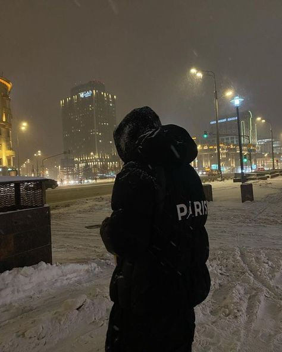
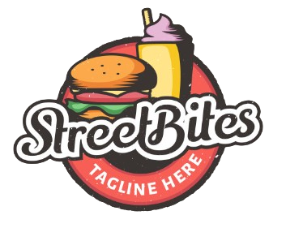
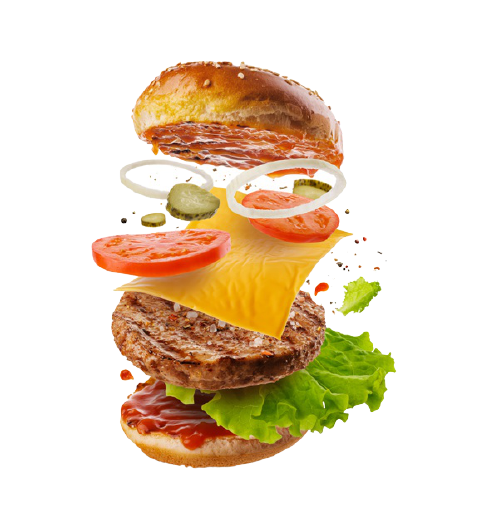

Ruschil Krisztián

Az oldal szerkesztője / készítője


Az Utca Falatok a legízletesebb és legautentikusabb utcai ételélményt hozza el neked. A forró falatoktól a laktató ételekig mindenki talál valami finomságot.
Budapest, Csanády u. 4b, 1132
Telefonszám: +36 30 286 5412
Hétfő: 10:00-18:00
Kedd: 10:00-18:00
Szerda: 10:00-18:00
Csütörtök: 10:00-18:00
Péntek: 10:00-18:00
Szombat: 10:00-20:00
Vasárnap: Zárva

Az oldal szerkesztője / készítője